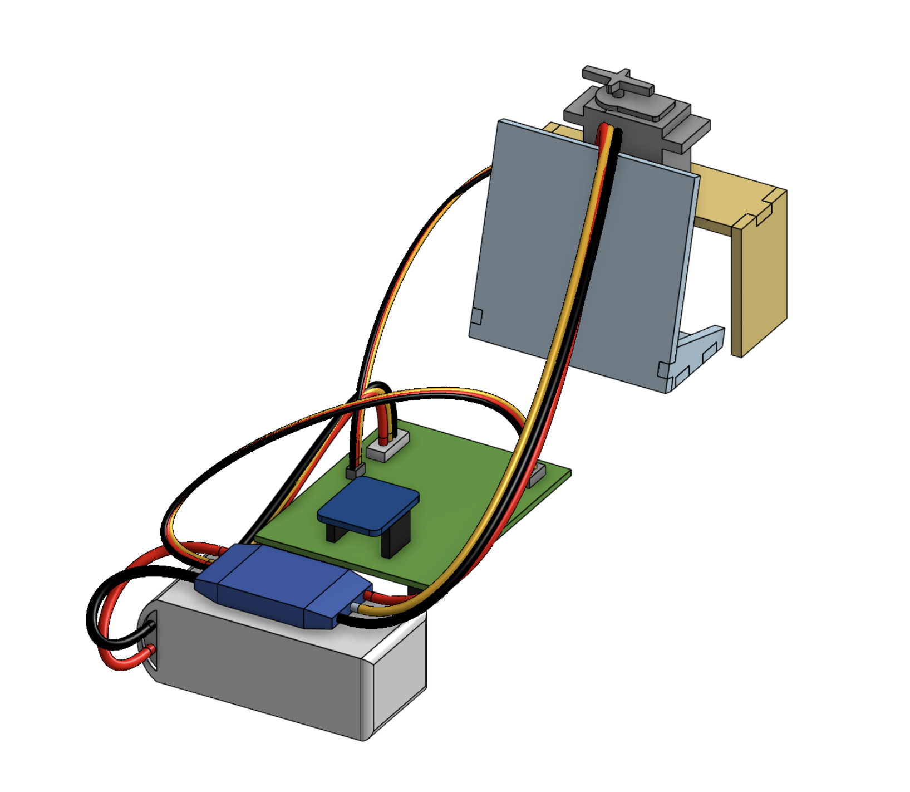

Projects
Steel Part Design & Testing — Daniels Manufacturing Corporation
CAD 3D/2D • GD&T (ASME Y14.5) • FMEA
- Designed a critical steel component concept-to-creation with 3D models and 2D drawings complete with GD&T per ASME Y14.5
- Ran CAD-based stress analysis and applied FMEA to find failure points, improving reliability by ~30%
- Partnered with R&D and manufacturing to preemptively solve design-to-production challenges
CAD Build & Project Management — TKE Advisor Board, Inc.
AutoCAD Inventor • DFA • Structural Modeling • Team Leadership • Gantt Planning
- Modeled a large-scale, $2,000 covered patio system; performed shear/strain calculations and materials research
- Led a 10-person construction team and used Gantt charts to meet schedule and budget constraints.
- Analyzed cost-performance trade-offs to deliver satisfactory results to the customer
Wind Flow Simulation — Burnett Honors College
ANSYS • CFD • Mesh Analysis • Engineering Reporting
- Simulated internal flow through a tunnel, analyzing changes in velocity profiles and pressure gradients
- Applied structured meshing to ensure simulation stability and output and interpreted data to support design improvement for embedded structures
Load-Bearing Wall Construction — Catalyst Surf Shop
Load Analysis • Budgeting • Client Collaboration • Real-World Constraint Engineering
- Drafted construction plans and managed a $1,000 budget with tight materials and schedule limitations
- Coordinated directly with the customer to meet functional and aesthetic requirements
Wind Flow Simulation — Daniels Manufacturing Company
Time Studies • Lean • Throughput • Reporting
- Performed time studies on 20+ machined parts, uncovering 15–20% unaccounted process time.
- Delivered a report that improved production estimates and scheduling accuracy.

Indoor Bar Project
AutoCAD Fusion • 2D CAD Drafting • Cradle to Grave Project Management • Technical Documentation
- Created 2D CAD production drawings and delivered technical documentation to customer to ensure ease of assembly and construction
- Produced drawing sets, material lists, and risk-mitigation strategies to ensure optimal product lifecycle
Autonomous Maze Robot — Burnett Honors College
C+ • CAD • 3D Printing •Control Systems
- Utilized C+ and Arduino systems to engineer a maze-navigating robot with a sensor-triggered catapult
- Modeled 3D printed catapult using 3D CAD for optimal performance